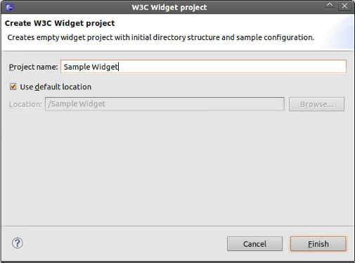
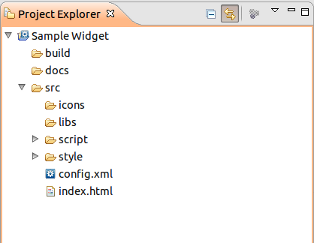

Creating the widget project
In this section, you will create a new widget project with the basic
configuration.
Creating the project
- To create a new widget project go to File >
New > W3C Widget Project. to open the New
Widget Project wizard.

- Fill in the project name and press the Finish
button.
- Go to Project Explorer to manage your newly
created widget project.

- Click on src/config.xml to manage the widget
configuration.